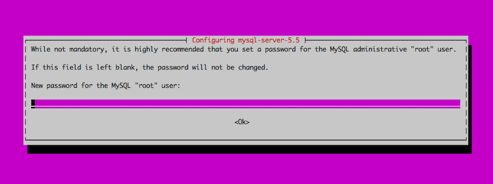
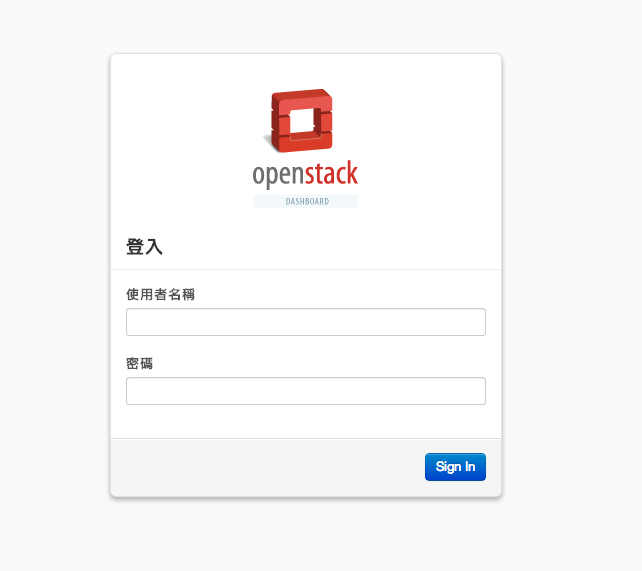

Lab 3 : OpenStack
實驗描述
OpenStack 是一個雲端運算軟體，運來管理叢集資源的管理。
而在資源管理上，OpenStack 將資源分割為運算、網路、儲存種類型，並分別使用不同的元件管理。

本次實驗將讓大家進行 OpenStack 的單機節點安裝。
由於實驗時間有限，我們會進行 OpenStack Compute 以及 Dashboard (Web GUI)的安裝。
實習環境
理學大樓 1002 教室
|
Cloud-A01 ～ Cloud-D12 |
| CPU |
AMD Phenom™ II X6 1065T Processor |
| Memory |
8G |
| Disk spaces |
500G、500G |
| O.S. |
Debian wheezy |
|
理學大樓 821 機房
|
CSIE-Cloud01 ～ CSIE-Cloud06 |
| CPU |
AMD Opteron™ Processor 6128 * 2
(total 16 cpu cores) |
| Memory |
32G |
| Disk spaces |
500G、500G、1T |
| O.S. |
Debian wheezy |
|
CSIE-Cloud07、CSIE-Cloud08 |
| CPU |
AMD Opteron™ Processor 6234 * 2
(total 24 cpu cores) |
| Memory |
32G |
| Disk spaces |
500G、500G、1T |
| O.S. |
Debian wheezy |
|
由於 OpenStack 官方推薦使用 Ubuntu 進行安裝，故本次使用安裝 Ubuntu 的虛擬機進行我們安裝 OpenStack的實作環境。
虛擬機環境
|
Virtual Machine |
| Location |
821 機房伺服器 |
| Memory |
4G |
| Disk spaces |
50G (QCOW2 Format) |
| O.S. |
Ubuntu 12.04 Server Edition |
實習開始前
實習內容
登入與設置虛擬機
登入虛擬機
！重要！：請注意是否登入遠端機器。
更換 source 來源
由於 Ubuntu 在台灣所提供的 Mirror site 十分不穩定，因此我們使用國網中心的鏡像點作為我們安裝套件的來源。
sudo cp /etc/apt/sources.list /etc/apt/sources.list.bak
sudo sed -i 's/tw.archive.ubuntu.com/free.nchc.org.tw/' /etc/apt/sources.list
sudo aptitude update
sudo aptitude safe-upgrade
由於 OpenStack 被 Ubuntu 分類為 Ubuntu Cloud 中的套件，所以我們要再加入額外的 source 來源。
(使用 nano 的溫馨小提醒：Ctrl + o 存檔 、 Ctrl + x 離開)
sudo nano /etc/apt/sources.list
# 在最後一行加入
deb http://ubuntu-cloud.archive.canonical.com/ubuntu/ precise-updates/grizzly main
最後將 Ubuntu Cloud 套件庫的 key 加入我們的系統，並再更新一次可用套件資訊。
sudo aptitude install ubuntu-cloud-keyring
sudo aptitude update
修改網路設定
本次實習利用 Linux Bridge 作為虛擬機網路的橋接器，所以我們必須安裝 bridge-utils 並建立 bridge。
sudo aptitude install bridge-utils
sudo cp /etc/network/interfaces /etc/network/interfaces.bak
sudo nano /etc/network/interfaces
auto lo
iface lo inet loopback
auto eth0
iface eth0 inet static
address
netmask 255.255.255.0
gateway 192.168.1.1
dns-nameservers 140.120.13.1 140.120.1.2
bridge_stp off
bridge_fd 0
auto br1
iface br1 inet static
address 192.168.2.1 # 可自訂private IP網段
netmask 255.255.255.0
bridge_ports eth1
bridge_stp off
bridge_fd 0
！注意！：上述的設定檔只會在第一次或重新啓動網路服務時生效，接下來我們直接建立一個 bridge 以供後續操作。
sudo brctl addbr br1
sudo brctl show
bridge name bridge id STP enabled interfaces
br1 8000.fe163e8b0584 no
sudo ifconfig br1 up
ifconfig br1
br1 Link encap:Ethernet HWaddr 9a:8f:86:ca:76:0e
inet6 addr: fe80::988f:86ff:feca:760e/64 Scope:Link
UP BROADCAST RUNNING MULTICAST MTU:1500 Metric:1
RX packets:0 errors:0 dropped:0 overruns:0 frame:0
TX packets:6 errors:0 dropped:0 overruns:0 carrier:0
collisions:0 txqueuelen:0
RX bytes:0 (0.0 B) TX bytes:468 (468.0 B)
以上為機器初始的設定，接下來我們開始安裝 OpenStack ......
安裝 MySQL 資料庫
利用 aptitude (或 apt-get) 安裝 MySQL 資料庫
使用 aptitude 的溫馨小提醒：若使用 Ubuntu Desktop Edition，是沒有 aptitude 指令的，使用 apt-get 取代即可。
sudo aptitude install python-mysqldb mysql-server
輸入密碼兩次：

修改資料庫的設定
MySQL DB 預設只能提供本機存取，為了安裝 OpenStack 的方便，我們設定為任何人都可以存取。
sudo cp /etc/mysql/my.cnf /etc/mysql/my.cnf.bak
sudo sed -i 's/127.0.0.1/0.0.0.0/g' /etc/mysql/my.cnf
sudo service mysql restart
增加 Database 到 MySQL
由於往後我們所安裝各個 OpenStack 元件的資訊管理都是透過資料庫，所以我們必須先提供各個元件所使用的 Database 。
mysql -u root -p
Enter password: # 輸入 SQL 資料庫的密碼:
Welcome to the MySQL monitor. Commands end with ; or \g.
Your MySQL connection id is 346
Server version: 5.5.32-0ubuntu0.12.04.1 (Ubuntu)
Copyright (c) 2000, 2013, Oracle and/or its affiliates. All rights reserved.
Oracle is a registered trademark of Oracle Corporation and/or its
affiliates. Other names may be trademarks of their respective
owners.
Type 'help;' or '\h' for help. Type '\c' to clear the current input statement.
mysql>
CREATE DATABASE keystone;
GRANT ALL ON keystone.* TO 'keystone'@'%' IDENTIFIED BY '';
GRANT ALL ON keystone.* TO 'keystone'@'localhost' IDENTIFIED BY '';
CREATE DATABASE glance;
GRANT ALL ON glance.* TO 'glance'@'%' IDENTIFIED BY '';
GRANT ALL ON glance.* TO 'glance'@'localhost' IDENTIFIED BY '';
CREATE DATABASE nova;
GRANT ALL ON nova.* TO 'nova'@'%' IDENTIFIED BY '';
GRANT ALL ON nova.* TO 'nova'@'localhost' IDENTIFIED BY '';
CREATE DATABASE cinder;
GRANT ALL ON cinder.* TO 'cinder'@'%' IDENTIFIED BY '';
GRANT ALL ON cinder.* TO 'cinder'@'localhost' IDENTIFIED BY '';
SHOW DATABASES;
+--------------------+
| Database |
+--------------------+
| information_schema |
| cinder |
| glance |
| keystone |
| mysql |
| nova |
| performance_schema |
| test |
+--------------------+
8 rows in set (0.00 sec)
quit
至此，我們將資料庫設定完畢。
安裝 rabbitMQ 以及 KeyStone
本次在 OpenStack 上會進行訊息傳遞以及認證管理的動作，所以本小節介紹傳遞訊息的 rabbitMQ 以及 認證管理服務：KeyStone 的安裝。
安裝 rabbitMQ server 與 KeyStone
sudo aptitude install rabbitmq-server keystone
設定 KeyStone 服務
sudo rm /var/lib/keystone/keystone.db
sudo cp /etc/keystone/keystone.conf /etc/keystone/keystone.conf.bak
sudo nano /etc/keystone/keystone.conf
# On line 78
connection = mysql://keystone:@/keystone
sudo diff /etc/keystone/keystone.conf /etc/keystone/keystone.conf.bak
78c78
< connection = mysql://keystone:@/keystone
---
> connection = sqlite:////var/lib/keystone/keystone.db
sudo service keystone restart
sudo keystone-manage db_sync
由於我們利用 KeyStone 管理憑證還需要設定其他元件的權限，我們利用 OpenStack 官方提供的腳本進行設定。
touch keystone_basic.sh keystone_endpoints_basic.sh
chmod +x keystone_basic.sh keystone_endpoints_basic.sh
nano keystone_basic.sh
#!/bin/sh
#
# Keystone basic configuration
# Mainly inspired by https://github.com/openstack/keystone/blob/master/tools/sample_data.sh
# Modified by Bilel Msekni / Institut Telecom
#
# Support: openstack@lists.launchpad.net
# License: Apache Software License (ASL) 2.0
#
HOST_IP=
ADMIN_PASSWORD=${ADMIN_PASSWORD:-}
SERVICE_PASSWORD=${SERVICE_PASSWORD:-}
export SERVICE_TOKEN="ADMIN"
export SERVICE_ENDPOINT="http://${HOST_IP}:35357/v2.0"
SERVICE_TENANT_NAME=${SERVICE_TENANT_NAME:-service}
get_id () {
echo `$@ | awk '/ id / { print $4 }'`
}
# Tenants
ADMIN_TENANT=$(get_id keystone tenant-create --name=admin)
SERVICE_TENANT=$(get_id keystone tenant-create --name=$SERVICE_TENANT_NAME)
# Users
ADMIN_USER=$(get_id keystone user-create --name=admin --pass="$ADMIN_PASSWORD" --email=admin@domain.com)
# Roles
ADMIN_ROLE=$(get_id keystone role-create --name=admin)
KEYSTONEADMIN_ROLE=$(get_id keystone role-create --name=KeystoneAdmin)
KEYSTONESERVICE_ROLE=$(get_id keystone role-create --name=KeystoneServiceAdmin)
# Add Roles to Users in Tenants
keystone user-role-add --user-id $ADMIN_USER --role-id $ADMIN_ROLE --tenant-id $ADMIN_TENANT
keystone user-role-add --user-id $ADMIN_USER --role-id $KEYSTONEADMIN_ROLE --tenant-id $ADMIN_TENANT
keystone user-role-add --user-id $ADMIN_USER --role-id $KEYSTONESERVICE_ROLE --tenant-id $ADMIN_TENANT
# The Member role is used by Horizon and Swift
MEMBER_ROLE=$(get_id keystone role-create --name=Member)
# Configure service users/roles
NOVA_USER=$(get_id keystone user-create --name=nova --pass="$SERVICE_PASSWORD" --tenant-id $SERVICE_TENANT --email=nova@domain.com)
keystone user-role-add --tenant-id $SERVICE_TENANT --user-id $NOVA_USER --role-id $ADMIN_ROLE
GLANCE_USER=$(get_id keystone user-create --name=glance --pass="$SERVICE_PASSWORD" --tenant-id $SERVICE_TENANT --email=glance@domain.com)
keystone user-role-add --tenant-id $SERVICE_TENANT --user-id $GLANCE_USER --role-id $ADMIN_ROLE
#QUANTUM_USER=$(get_id keystone user-create --name=quantum --pass="$SERVICE_PASSWORD" --tenant-id $SERVICE_TENANT --email=quantum@domain.com)
#keystone user-role-add --tenant-id $SERVICE_TENANT --user-id $QUANTUM_USER --role-id $ADMIN_ROLE
CINDER_USER=$(get_id keystone user-create --name=cinder --pass="$SERVICE_PASSWORD" --tenant-id $SERVICE_TENANT --email=cinder@domain.com)
keystone user-role-add --tenant-id $SERVICE_TENANT --user-id $CINDER_USER --role-id $ADMIN_ROLE
nano keystone_endpoints_basic.sh
#!/bin/sh
#
# Keystone basic Endpoints
# Mainly inspired by https://github.com/openstack/keystone/blob/master/tools/sample_data.sh
# Modified by Bilel Msekni / Institut Telecom
#
# Support: openstack@lists.launchpad.net
# License: Apache Software License (ASL) 2.0
#
# Host address
HOST_IP=
EXT_HOST_IP=
# MySQL definitions
MYSQL_USER=keystone
MYSQL_DATABASE=keystone
MYSQL_HOST=$HOST_IP
MYSQL_PASSWORD=
# Keystone definitions
KEYSTONE_REGION=RegionOne
export SERVICE_TOKEN=ADMIN
export SERVICE_ENDPOINT="http://${HOST_IP}:35357/v2.0"
while getopts "u:D:p:m:K:R:E:T:vh" opt; do
case $opt in
u)
MYSQL_USER=$OPTARG
;;
D)
MYSQL_DATABASE=$OPTARG
;;
p)
MYSQL_PASSWORD=$OPTARG
;;
m)
MYSQL_HOST=$OPTARG
;;
K)
MASTER=$OPTARG
;;
R)
KEYSTONE_REGION=$OPTARG
;;
E)
export SERVICE_ENDPOINT=$OPTARG
;;
T)
export SERVICE_TOKEN=$OPTARG
;;
v)
set -x
;;
h)
cat <&2
exit 1
;;
:)
echo "Option -$OPTARG requires an argument" >&2
exit 1
;;
esac
done
if [ -z "$KEYSTONE_REGION" ]; then
echo "Keystone region not set. Please set with -R option or set KEYSTONE_REGION variable." >&2
missing_args="true"
fi
if [ -z "$SERVICE_TOKEN" ]; then
echo "Keystone service token not set. Please set with -T option or set SERVICE_TOKEN variable." >&2
missing_args="true"
fi
if [ -z "$SERVICE_ENDPOINT" ]; then
echo "Keystone service endpoint not set. Please set with -E option or set SERVICE_ENDPOINT variable." >&2
missing_args="true"
fi
if [ -z "$MYSQL_PASSWORD" ]; then
echo "MySQL password not set. Please set with -p option or set MYSQL_PASSWORD variable." >&2
missing_args="true"
fi
if [ -n "$missing_args" ]; then
exit 1
fi
keystone service-create --name nova --type compute --description 'OpenStack Compute Service'
keystone service-create --name cinder --type volume --description 'OpenStack Volume Service'
keystone service-create --name glance --type image --description 'OpenStack Image Service'
keystone service-create --name keystone --type identity --description 'OpenStack Identity'
#keystone service-create --name ec2 --type ec2 --description 'OpenStack EC2 service'
#keystone service-create --name quantum --type network --description 'OpenStack Networking service'
create_endpoint () {
case $1 in
compute)
keystone endpoint-create --region $KEYSTONE_REGION --service-id $2 --publicurl 'http://'"$EXT_HOST_IP"':8774/v2/$(tenant_id)s' --adminurl 'http://'"$HOST_IP"':8774/v2/$(tenant_id)s' --internalurl 'http://'"$HOST_IP"':8774/v2/$(tenant_id)s'
;;
volume)
keystone endpoint-create --region $KEYSTONE_REGION --service-id $2 --publicurl 'http://'"$EXT_HOST_IP"':8776/v1/$(tenant_id)s' --adminurl 'http://'"$HOST_IP"':8776/v1/$(tenant_id)s' --internalurl 'http://'"$HOST_IP"':8776/v1/$(tenant_id)s'
;;
image)
keystone endpoint-create --region $KEYSTONE_REGION --service-id $2 --publicurl 'http://'"$EXT_HOST_IP"':9292/' --adminurl 'http://'"$HOST_IP"':9292/' --internalurl 'http://'"$HOST_IP"':9292/'
;;
identity)
keystone endpoint-create --region $KEYSTONE_REGION --service-id $2 --publicurl 'http://'"$EXT_HOST_IP"':5000/v2.0' --adminurl 'http://'"$HOST_IP"':35357/v2.0' --internalurl 'http://'"$HOST_IP"':5000/v2.0'
;;
# ec2)
# keystone endpoint-create --region $KEYSTONE_REGION --service-id $2 --publicurl 'http://'"$EXT_HOST_IP"':8773/services/Cloud' --adminurl 'http://'"$HOST_IP"':8773/services/Admin' --internalurl 'http://'"$HOST_IP"':8773/services/Cloud'
# ;;
# network)
# keystone endpoint-create --region $KEYSTONE_REGION --service-id $2 --publicurl 'http://'"$EXT_HOST_IP"':9696/' --adminurl 'http://'"$HOST_IP"':9696/' --internalurl 'http://'"$HOST_IP"':9696/'
# ;;
esac
}
for i in compute volume image object-store identity ec2 network; do
id=`mysql -h "$MYSQL_HOST" -u "$MYSQL_USER" -p"$MYSQL_PASSWORD" "$MYSQL_DATABASE" -ss -e "SELECT id FROM service WHERE type='"$i"';"` || exit 1
create_endpoint $i $id
done
sudo ./keystone_basic.sh
sudo ./keystone_endpoints_basic.sh
新增環境變數，提供給 Console 管理 OpenStack 用。
nano ~/stackrc
export OS_USERNAME=admin
export OS_PASSWORD=
export OS_TENANT_NAME=admin
export OS_AUTH_URL=http://127.0.0.1:5000/v2.0/
source ~/stackrc
詢問 KeyStone 有哪些使用者，如果有顯示結果，KeyStone 便設定完成。
keystone user-list
+----------------------------------+--------+---------+-------------------+
| id | name | enabled | email |
+----------------------------------+--------+---------+-------------------+
| b97ef6697d8d4d4f9a357bff7b469f22 | admin | True | admin@domain.com |
| abd504c0ddbd4e249e7b22dc3ccb666c | cinder | True | cinder@domain.com |
| a4540d82afb8490a8caa35d81a47ae01 | glance | True | glance@domain.com |
| faf9051d408b4869bc065cb8631e785e | nova | True | nova@domain.com |
+----------------------------------+--------+---------+-------------------+
安裝與設定 Glance
Glance 提供使用者 VM image 的管理服務，所以我們要安裝 Glance 來做 VM 磁碟的映像檔管理。
安裝 Glance
sudo aptitude install glance
設定 Glance
首先，我們先設定一個認證授權的 authtoken 選項給 console 管理用。
sudo nano /etc/glance/glance-api-paste.ini
# 在最後一行新增
[filter:authtoken]
auth_host = 127.0.0.1
auth_port = 35357
auth_protocol = http
admin_tenant_name = service
admin_user = glance
admin_password =
sudo nano /etc/glance/glance-registry-paste.ini
# 在最後一行新增
[filter:authtoken]
auth_host = 127.0.0.1
auth_port = 35357
auth_protocol = http
admin_tenant_name = service
admin_user = glance
admin_password =
小提醒：上面是兩個不同的設定檔，所以都要做喔！！
sudo nano /etc/glance/glance-api.conf
# 第 49 行
sql_connection = mysql://glance:@/glance
# 第 344 行
admin_tenant_name = service
admin_user = glance
admin_password =
# 在最後面新增一行
flavor = keystone
sudo nano /etc/glance/glance-registry.conf
# 第 28 行
sql_connection = mysql://glance:@/glance
# 第 78 行
admin_tenant_name = service
admin_user = glance
admin_password =
# 在最後面新增一行
flavor = keystone
套用設定
sudo glance-manage version_control 0
sudo glance-manage db_sync
sudo service glance-registry restart
sudo service glance-api restart
測試 Glance 工作狀況
說明：我們會上傳一個 image 檔案到 Glance，如果我們可以上傳成功，那我們在 Glance 上的設定便大功告成了。
glance image-create --is-public true --disk-format qcow2 --container-format bare --name cirros-0.3.0-x86_64 --location https://launchpad.net/cirros/trunk/0.3.0/+download/cirros-0.3.0-x86_64-disk.img
glance image-list
+--------------------------------------+---------------------+-------------+------------------+---------+--------+
| ID | Name | Disk Format | Container Format | Size | Status |
+--------------------------------------+---------------------+-------------+------------------+---------+--------+
| dd2dc33a-37da-4c10-aa0b-8e8c6e49bb91 | cirros-0.3.0-x86_64 | qcow2 | bare | 9761280 | active |
+--------------------------------------+---------------------+-------------+------------------+---------+--------+
安裝 Libvirt
由於 OpenStack 管理虛擬機是利用 Libvirt API 進行管理。因此，我們將如同上次實習一樣安裝 Libvirt 。
確認系統支援的虛擬化技術
egrep '(vmx|svm)' --color=always /proc/cpuinfo
flags : fpu de pse tsc msr pae mce cx8 apic sep mtrr pge
mca cmov pat pse36 clflush mmx fxsr sse sse2 syscall nx lm nopl
pni cx16 popcnt hypervisor lahf_lm svm abm sse4a
載入 KVM Module
lsmod | grep kvm
kvm_amd 60205 0
kvm 455932 1 kvm_amd
如果發現 console 完全沒有畫面，請先執行以下指令。
sudo modprobe kvm_amd
lsmod | grep kvm
kvm_amd 60205 0
kvm 455932 1 kvm_amd
！！重要！！：如果還是沒有畫面，請馬上舉手詢問助教。
安裝 KVM 以及 Libvirt
sudo aptitude install kvm libvirt-bin pm-utils
設定 Libvirt 的設定檔
為了配合 OpenStack 的運作，我們還需要調整 Libvirt 對系統的身份以及裝置管理設定。
sudo cp /etc/libvirt/qemu.conf /etc/libvirt/qemu.conf.bak
sudo rm /etc/libvirt/qemu.conf
sudo nano /etc/libvirt/qemu.conf
user = "root"
group = "root"
cgroup_device_acl = [
"/dev/null", "/dev/full", "/dev/zero",
"/dev/random", "/dev/urandom",
"/dev/ptmx", "/dev/kvm", "/dev/kqemu",
"/dev/rtc", "/dev/hpet","/dev/net/tun"
]
修改 Libvirt 管理設定檔。
sudo cp /etc/libvirt/libvirtd.conf /etc/libvirt/libvirtd.conf.bak
sudo nano /etc/libvirt/libvirtd.conf
diff /etc/libvirt/libvirtd.conf /etc/libvirt/libvirtd.conf.bak
22c22
< listen_tls = 0
---
> #listen_tls = 0
33c33
< listen_tcp = 1
---
> #listen_tcp = 1
146c146
< auth_tcp = "none"
---
> #auth_tcp = "sasl"
sudo cp /etc/init/libvirt-bin.conf /etc/init/libvirt-bin.conf.bak
sudo nano /etc/init/libvirt-bin.conf
diff /etc/init/libvirt-bin.conf /etc/init/libvirt-bin.conf.bak
11c11
< env libvirtd_opts="-d -l"
---
> env libvirtd_opts="-d"
sudo cp /etc/default/libvirt-bin /etc/default/libvirt-bin.bak
sudo nano /etc/default/libvirt-bin
diff /etc/default/libvirt-bin /etc/default/libvirt-bin.bak
8c8
< libvirtd_opts="-d -l"
---
> libvirtd_opts="-d"
刪除預設的 bridge 設定
由於我們使用的網路架構會全部交由 OpenStack 控管，所以我們先將 Libvirt 預先配置的橋接器刪除。
sudo virsh net-destroy default
sudo virsh net-undefine default
重新啓動 Libvirt 服務
sudo service dbus restart
sudo service libvirt-bin restart
安裝 Nova
安裝 Nova 套件
sudo aptitude install nova-compute-kvm nova-api nova-ajax-console-proxy nova-cert nova-consoleauth nova-doc nova-scheduler nova-network nova-novncproxy novnc nova-conductor python-novnc python-nova python-novaclient
修改 Nova 設定檔
如同修改 Glance 設定檔一樣，我們也需要修改 Nova 的設定檔案。
sudo nano /etc/nova/api-paste.ini
# 第 104 行
admin_tenant_name = service
admin_user = nova
admin_password =
sudo nano /etc/nova/nova-compute.conf
[DEFAULT]
libvirt_type=kvm
compute_driver=libvirt.LibvirtDriver
sudo cp /etc/nova/nova.conf /etc/nova/nova.conf.bak
sudo rm /etc/nova/nova.conf
sudo nano /etc/nova/nova.conf
# 複製貼上
[DEFAULT]
# LOGS/STATE
verbose=false
debug=false
logdir=/var/log/nova
state_path=/var/lib/nova
lock_path=/var/lock/nova
root_helper=sudo nova-rootwrap /etc/nova/rootwrap.conf
# DATABASE
sql_connection=mysql://nova:@/nova
# AUTHENTICATION
auth_strategy=keystone
# SCHEDULER
compute_scheduler_driver=nova.scheduler.filter_scheduler.FilterScheduler
# RABBITMQ
rabbit_host=
# COMPUTE
compute_driver=libvirt.LibvirtDriver
connection_type=libvirt
libvirt_type=kvm
instance_name_template=instance-%08x
allow_resize_to_same_host=true
resume_guests_state_on_host_boot=true
start_guests_on_host_boot=false
# APIS
osapi_compute_extension=nova.api.openstack.compute.contrib.standard_extensions
enabled_apis= metadata,ec2,osapi_compute
multihost=true
nova_url=http://:8774/v1.1/
api_paste_config=/etc/nova/api-paste.ini
allow_admin_api=true
use_deprecated_auth=false
ec2_dmz_host=
s3_host=
# GLANCE
image_service=nova.image.glance.GlanceImageService
glance_api_servers=:9292
# Networking
network_manager=nova.network.manager.FlatDHCPManager
force_dhcp_release=true
dhcpbridge_flagfile=/etc/nova/nova.conf
dhcpbridge=/usr/bin/nova-dhcpbridge
firewall_driver=nova.virt.libvirt.firewall.IptablesFirewallDriver
public_interface=eth0
# flat_interface=eth1
flat_network_bridge=br1
fixed_range=192.168.1.0/24
# Cinder
volume_api_class=nova.volume.cinder.API
# NOVNC CONSOLE
novnc_enable=true
novncproxy_base_url=http://:6080/vnc_auto.html
vncserver_proxyclient_address=
vncserver_listen=
# Change my_ip to match each host
my_ip=
sudo nova-manage db sync
Final check! 重新啓動所有服務
我們先編輯一個重新啓動的腳本，在利用腳本重新啓動所有服務。
nano ~/restart.sh
#!/bin/bash
for a in rabbitmq-server libvirt-bin nova-network nova-cert nova-compute nova-api nova-conductor nova-scheduler nova-consoleauth; do sudo service "$a" stop; done
for a in rabbitmq-server libvirt-bin nova-network nova-cert nova-compute nova-api nova-conductor nova-scheduler nova-consoleauth; do sudo service "$a" start; done
重新啓動服務...
chmod a+x ~/restart.sh
~/restart.sh
測試 Nova 是否安裝成功
sudo nova-manage service list
Binary Host Zone Status State Updated_At
nova-cert stack02 internal enabled :-) 2013-10-06 09:12:11
nova-conductor stack02 internal enabled :-) 2013-10-06 09:12:13
nova-consoleauth stack02 internal enabled :-) 2013-10-06 09:12:09
nova-scheduler stack02 internal enabled :-) 2013-10-06 09:12:14
nova-network stack02 internal enabled :-) 2013-10-06 09:12:11
nova-compute stack02 nova enabled :-) 2013-10-06 09:12:12
建立網路環境供虛擬機使用
nova network-create private --fixed-range-v4=192.168.1.0/24 --bridge-interface=br1
sudo nova-manage network list
id IPv4 IPv6 start address DNS1 DNS2 VlanID project uuid
1 192.168.1.0/24 None 192.168.1.2 8.8.4.4 None None None 50f8656f-df5b-4b50-bf49-47e5ddc40ba0
sudo restart nova-network
大家辛苦了，到這邊我們完成了 OpenStack Compute 的環節。
安裝 Cinder
如果上述安裝都完成的話，恭喜大家，我們即將安裝本次實習的最後兩個元件之一 - Cinder。
安裝 Cinder 套件
sudo aptitude install cinder-api cinder-scheduler cinder-volume iscsitarget open-iscsi iscsitarget-dkms python-cinderclient tgt
設定 iSCSI 服務
sudo sed -i 's/false/true/g' /etc/default/iscsitarget
sudo service iscsitarget start
sudo service open-iscsi start
設定 Cinder 服務
sudo nano /etc/cinder/cinder.conf
# 最後一行
sql_connection = mysql://cinder:@:3306/cinder
sudo nano /etc/cinder/api-paste.ini
# 第59行
admin_tenant_name = service
admin_user = cinder
admin_password =
新增 Cinder Volume
接下來我們會在我們的機器上新增一個 LVM Volume ，並加入 Cinder 管理。
sudo dd if=/dev/zero of=/root/cinder-volumes bs=1M seek=20000 count=0
sudo losetup /dev/loop0 /root/cinder-volumes
sudo losetup -a
/dev/loop0: [fd02]:654088 (/root/cinder-volumes)
sudo fdisk /dev/loop0
Device contains neither a valid DOS partition table, nor Sun, SGI or OSF disklabel
Building a new DOS disklabel with disk identifier 0xcebb40d6.
Changes will remain in memory only, until you decide to write them.
After that, of course, the previous content won't be recoverable.
Warning: invalid flag 0x0000 of partition table 4 will be corrected by w(rite)
Command (m for help): n
Partition type:
p primary (0 primary, 0 extended, 4 free)
e extended
Select (default p): p
Partition number (1-4, default 1): 1
First sector (2048-40959999, default 2048):[直接按Enter]
Using default value 2048
Last sector, +sectors or +size{K,M,G} (2048-40959999, default 40959999):[直接按Enter]
Using default value 40959999
Command (m for help): t
Selected partition 1
Hex code (type L to list codes): 8e
Changed system type of partition 1 to 8e (Linux LVM)
Command (m for help): w
The partition table has been altered!
Calling ioctl() to re-read partition table.
WARNING: Re-reading the partition table failed with error 22: Invalid argument.
The kernel still uses the old table. The new table will be used at
the next reboot or after you run partprobe(8) or kpartx(8)
Syncing disks.
sudo pvcreate /dev/loop0
Physical volume "/dev/loop0" successfully created
sudo vgcreate cinder-volumes /dev/loop0
Volume group "cinder-volumes" successfully created
sudo vgdisplay
--- Volume group ---
VG Name cinder-volumes
System ID
Format lvm2
Metadata Areas 1
Metadata Sequence No 1
VG Access read/write
VG Status resizable
MAX LV 0
Cur LV 0
Open LV 0
Max PV 0
Cur PV 1
Act PV 1
VG Size 19.53 GiB
PE Size 4.00 MiB
Total PE 4999
Alloc PE / Size 0 / 0
Free PE / Size 4999 / 19.53 GiB
VG UUID tiB9E1-SDok-vpHx-ESV8-kFc2-rkTr-d20g7r
更新 Cinder 設定並重新啓動
sudo cinder-manage db sync
sudo service cinder-api restart
sudo service cinder-scheduler restart
sudo service cinder-volume restart
系統安全設定
新增安全規則：設定虛擬機之間允許通過的封包類型
本次實習允許通過的封包類型為 ssh 協定以及 icmp 。
nova secgroup-add-rule default tcp 22 22 0.0.0.0/0
nova secgroup-add-rule default icmp -1 -1 0.0.0.0/0
將我們的 ssh 登入金鑰加入 Nova 中，方便後續的登入。
ssh-keygen
nova keypair-add --pub_key ~/.ssh/id_rsa.pub mykey
修改資料夾的所有者，讓 Nova 可以存取 VM 的相關資訊
sudo chown -R nova:nova /var/lib/nova/
安裝 Dashboard
OpenStack 提供了 Web GUI - Dashboard，透過 Dashboard 我們可以較容易的管理 OpenStack 中的資源。
安裝 Dashboard 套件
sudo aptitude install memcached libapache2-mod-wsgi openstack-dashboard
移除不會用到的 GUI 主題
sudo dpkg --purge openstack-dashboard-ubuntu-theme
重新啓動網頁服務
sudo service apache2 restart
sudo service memcached restart
大功告成！！
Visit with your web browser : http:///horizon
帳號：admin
密碼：

Assignment#3
利用已經建立的 OpenStack 設定以下環境：
1. 安裝兩台虛擬機器，其作業系統皆為 Debian。
2. 一台虛擬機器上安裝 Apache web server，另一台安裝套件 w3m 。
3. 需要讓安裝 w3m 的虛擬機可以瀏覽另一台 Debian 網頁伺服器首頁。
sudo iptables -t nat -A POSTROUTING -s [VM網域] -o eth0 -j MASQUERADE
w3m [另一台VM的IP]
This original manual is powered by NCHC PerComp Lab.
The CSS is powered by Chi-Sheng Su
This page is powered by Kevin Chen